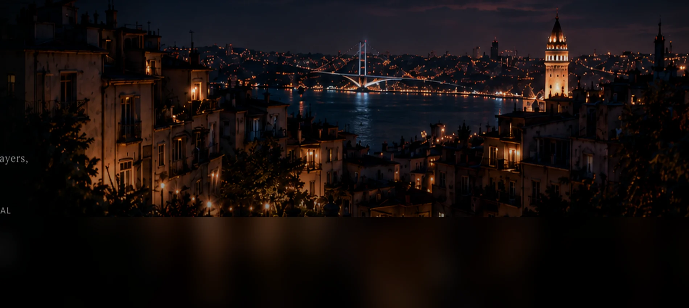
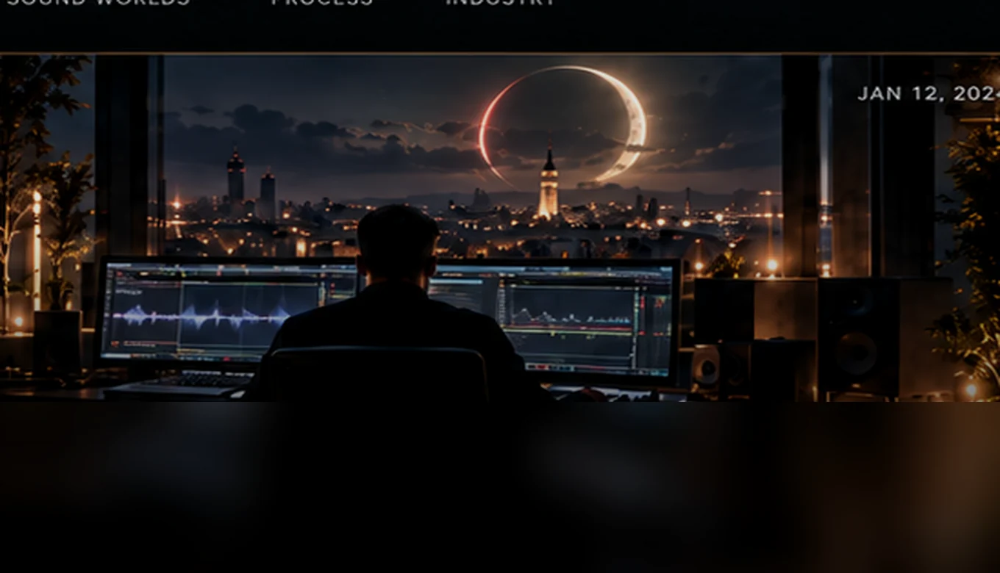
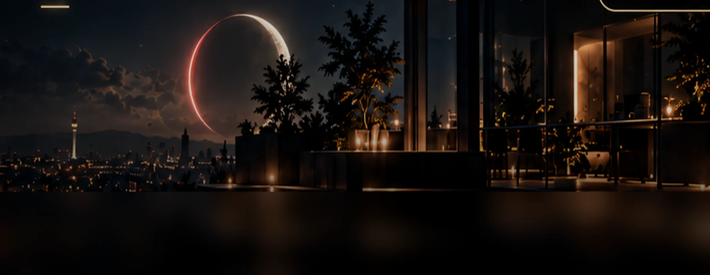

INDEPENDENT RECORD LABEL · LONDON / İSTANBUL / ANKARA
LET’S MAKE NOISE.
Distinctive sounds. Cinematic stories.
Four artists and sound universes under CORE MUSIC LONDON.
CORE MUSIC LONDON / ROSTER & WORLDS
Our Artists & Worlds
 ARTIST • GLOBAL / ELECTRONIC
CORE
Debut Album: "Kiss Me Wrong"
ARTIST • GLOBAL / ELECTRONIC
CORE
Debut Album: "Kiss Me Wrong"
 ARTIST • NOCTURNAL / ATMOSPHERIC
khrysaor
Albums: "Low Battery" & "SUSSUZ Soundtrack"
ARTIST • NOCTURNAL / ATMOSPHERIC
khrysaor
Albums: "Low Battery" & "SUSSUZ Soundtrack"
 ARTIST • ANKARA / CELEBRATION
ANGARALI KEREMSİ
Album: "Düğün Dernek"
ARTIST • ANKARA / CELEBRATION
ANGARALI KEREMSİ
Album: "Düğün Dernek"
 SOUNDTRACK • CINEMATIC / NARRATIVE
SUSSUZ SOUNDTRACK
Composed & Produced by khrysaor • 8 Tracks & 3D Interactive Virtual World
SOUNDTRACK • CINEMATIC / NARRATIVE
SUSSUZ SOUNDTRACK
Composed & Produced by khrysaor • 8 Tracks & 3D Interactive Virtual World
FEATURED STREAM
Watch & Listen
THE JOURNAL · STÜDYO REHBERLERİ & HİKÂYELER
Behind the sound.
Koray Taşan'ın prodüksiyon notları, Suno/MiniMax prompt mimarileri, Türkçe söz yazımı prozodisi ve EBU R128 mastering kılavuzları.

FOUNDER'S NOTE · KORAY TAŞAN Cihangir'den Londra'ya: CORE MUSIC & khrysaor Hikâyem HİKÂYEYİ OKU ↗
HOW-TO · PROMPT ARCHITECTURE AI Müzik Prompt Mimarisi: Suno v4 & MiniMax Meta-Tag Rehberi REHBERİ OKU ↗
SONGWRITING · PROZODİ "Ritim, Anlamın Nefesidir": Şarkı Sözü Yazımı ve Türkçe Prozodi USTALIK SINIFI ↗
HOW-TO · SUNO MASTERCLASS
Suno Kullanım İpuçları (2026): 'Extend' Kurgusu ve Stüdyo Hileleri
KILAVUZU OKU ↗
AUDIO ENGINEERING · DSP
Stem Ayrıştırma, Vokal Klonlama (SVC) ve EBU R128 Mastering
MÜHENDİSLİK REHBERİ ↗
STORY / SOUND
Inside SUSSUZ: A Soundtrack for a Place
READ STORY ↗